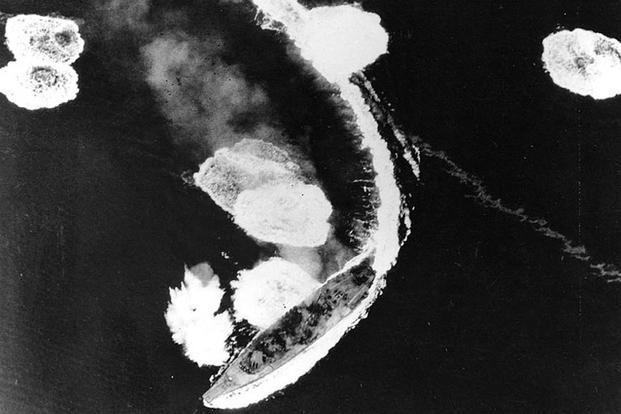

What are battleships
Battleships were the capital ships of the world's navies from about 1860, when it began to supplant the wooden-hulled, sail driven ship of the line, to World War II, when its position was taken over by aircraft carriers. They combined large size, powerful guns, heavy armor and underwater protection with fairly high speed, great cruising radius and general sea-worthiness. At their peak, they were able to hit targets with great precision at ranges of over 30km and were able to absorb heavy damage while remaining afloat and continuing to fight. In World War II, battleships mainly served to bombard enemy coastal defenses in preparation for amphibious assault and as part of the air-defense for carrier task forces.
Where are they now
After World War II, it became apparent that battleships were no longer worth the considerable cost of construction and maintenance. As the role of aircraft engagements grew, ranges grew longer and longer, making heavy gun armament irrelevant. The armor of battleships were equally irrelevant in the face of nuclear missles, with ranges of 100km or more, that could be mounted on smaller vessel classes such as destroyers. By the end of the 1950s, these ships, which formerly offered no noteworthy opposition to battleships, were now capable of eliminating battleships from outside the range of the ship's heavy guns. The last battleship, USS Missouri, was decommissioned in 1991.
Website QR Code
Click to toggle fullscreen
Ships of the line
Steam power
Ironclads
The Gloire
The Warrior
Pre-dreadnought battleships
Dreadnought era
Post World War I
Post World War I
World War II
Post World War II
End of the battleship era
Vittorio Veneto
Littorio-class battleship
Vittorio Veneto was the second member of the Littorio-class battleships that served the Italian Regia Marina (Royal Navy) during World War II. She was named after the Italian victory at Vittorio Veneto during World War I and she had 3 sister ships, Littorio, Roma and Impero. She was armed with a main battery of nine 381mm guns in three triple turrets and could steam at a speed of 30 knots.
Speed
- 30 knots
Range
- 3,410 nmi at 20 knots
Armaments
- 9 x 381mm (15in) guns
- 12 x 152mm (6in) guns
- 4 x 120mm (4.7in) /40 guns
- 12 x 90mm (3.5in) AA guns
- 20 x 37mm (1.5in) guns
- 20 x 20mm (0.79in) guns
Armor
- Main belt: 350mm (14in)
- Deck: 162mm (6.4in)
- Turrets: 350mm
- Conning tower: 260mm (10in)
Click here to learn more.
Richelieu
Richelieu-class battleship
Richelieu was a Frech fast battleship, the lead ship of the Richelieu class. Built as a response to the Italian Littorio class, the Richelieu-class battleships were based on their immediate predecessors of the Dunkerque class with the same unconventional arrangement that grouped their main battery forward in two quadruple gun turrets. They were scaled up to accomomdate a much more powerful main battery of eight 380mm guns, with increased armor to protect them from guns of the same caliber.
Speed
- 32 knots
Range
- 9,500 nmi at 15 knots
Armaments
- 8 x 380mm (15in) /45 Modèle 1935 gunsguns
- 9 x 152mm (6in) /50 guns
- 12 x 100mm (3.9in) AA guns
- 8 x 37mm (1.5in) AA guns
- 20 x 13.2mm (0.52in) Hotchkiss machine guns
Armor
- Belt: 330mm (13in)
- Main deck: 170mm (6.4in)
- Turrets: 430mm (17in)
- Conning tower: 340mm (13in)
Click here to learn more.
Bismarck
Bismarck-class battleship
Bismarck was the first of two Bismarck-class battleships built for Nazi Germany's Kriegsmarine, named after Chancellor Otta von Bismarck. Bismarck and her sister ship Tirpitz were the largest battleships ever built by Nazi Germany, and two of the largest built by any European power.
Speed
- 30.01 knots
Range
- 8,870 nmi at 19 knots
Armaments
- 8 x 38cm (15in) SK C/34 (4 x 2)
- 12 x 15cm (5.9in) SK C/28 (6 x 2)
- 16 x 10.5cm (4.1in) SK C/33 (8 x 2)
- 16 x 3.7cm (1.5in) SK C/30 (8 x 2)
- 12 x 2cm (0.79in) FlaK 30 (12 x 1)
Armor
- Belt: 320mm
- Turrets: 360mm
- Main deck: 100 - 120mm
Click here to learn more.
HMS King George V
King George V-class battleship
HMS King George V was the lead ship of the Five British King George V-class battleships of the Royal Navy. In May 1941, along with HMS Rodney, King George V was involved in the hunt for and pursuit of the German battleship Bismarck, eventually inflicting severe damage which led to the German vessel's sinking.
Speed
- 28 knots
Range
- 5,400 nmi at 18 knots
Armaments
- 10 x BL 14-inch (356mm) Mk VII guns
- 16 x QF 5.25-inch (133mm) Mk I guns
- 64 x 2 pounder "pom-pom" (40mm)
Armor
- Main belt: 15 inches (380mm)
- Lower belt: 6 inches (150mm)
- Deck: up to 5.6 inches (140mm)
- Main turrets: 13 inches (330mm)
- Barbettes: 13 inches (330mm)
Click here to learn more.
Yamato

Yamato-class battleship
Yamato was the lead ship of her class of battleships built for the Imperial Japanese Navy (IJN) shortly before World War II. Named after the ancient Japanese Province, Yamato was designed to counter the numerically superior battleship fleet of the United States. She and her sister ship, Musashi, were the heaviest and most powerfully armed battleships ever constructed, displacing nearly 72,000 tonnes at full load and armed with nine 46cm Type 94 main guns, which were the largest guns ever mounted on a warship.
Speed
- 27 knots
Range
- 7,200 nmi at 16 knots
Armaments
- 3 x triple 46cm (18.1in) guns
- 2 x triple 15.5cm (6.1in) guns
- 12 x twin 12.7cm (5in) DP guns
- 162 x triple 2.5cm (1in) AA guns
- 4 x twin 13.2mm (0.52in) AA machine guns
Armor
- Waterline belt: 410mm (16.1in)
- Deck: 200 - 226.5mm (7.9 - 8.9in)
- Gun turrets: 650mm (25.6in) (face)
Click here to learn more.
USS Missouri
Iowa-class battleship
USS Missouri is an Iowa-class battleship built for the United States Navy (USN) in the 1940s and is currently a museum ship. Completed in 1944, she is the last battleship commissioned by the United States. The ship was assigned to the Pacific Theater during World War II, where she participated in the Battles of Iwo Jima and Okinawa and shelled the Japanese home islands. Her quaterdeck was the site of the surrender of the Empire of Japan, which ended World War II.
Speed
- 32.5 knots
Range
- 15,000 nmi at 15 knots
Armaments
- 3 x triple 16in (406mm) guns
- 10 x twin 5in (127mm) DP guns
- 10 x quadruple 40mm (1.6in) AA guns
- 49 x single 20mm (0.8in) AA guns
Armor
- Waterline belt: 12.1in (307mm)
- Bulkheads: 14.5in (368mm)
- Barbettes: 11.6 - 17.3in (295 - 439mm)
- Turrets: 19.7in (500mm)
- Deck: 4.75 - 6.2in (121 - 157mm)
Click here to learn more.